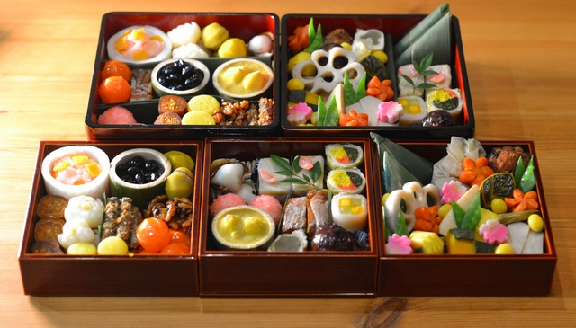
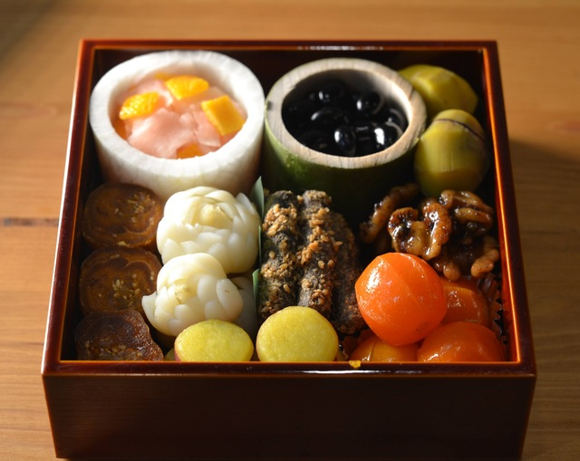
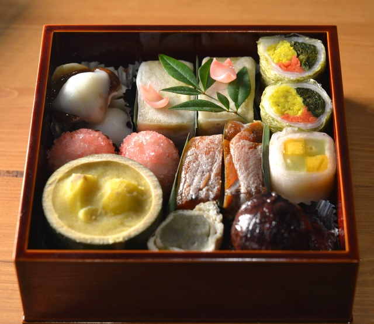
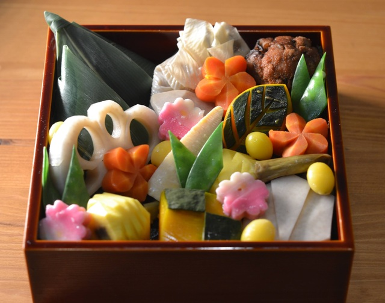
制作過程はこちら。2021年の料理の総括としておせちを作ります〜。今年は精進で作ってみようと思います。海老もイクラも伊達巻も魚も使えない制約下でどこまでいけるかな・・・。まずは精進出汁から。昆布だけだと弱いので、真昆布を炙って、煎り大豆、自家製の干椎茸、自家製の干瓢を加えて抽出してきます。 pic.twitter.com/W9GFhmRLmB
— Kentaro Hara (@xharaken) December 28, 2021
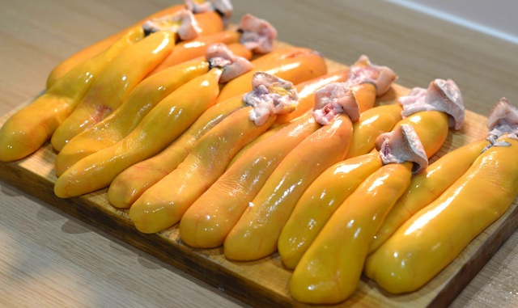
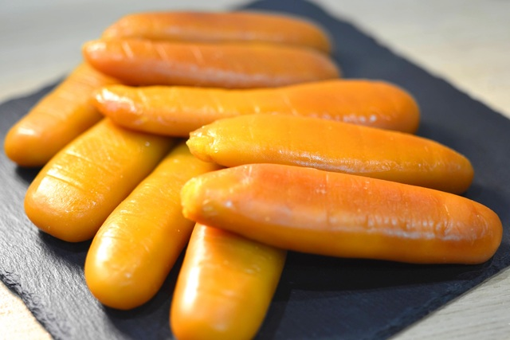
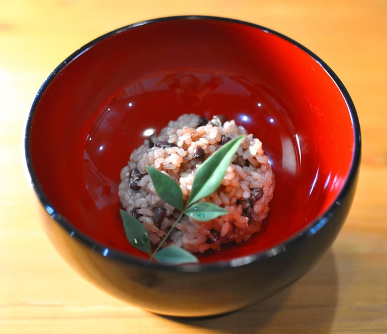
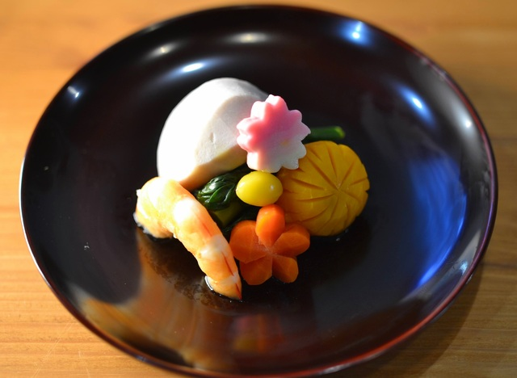
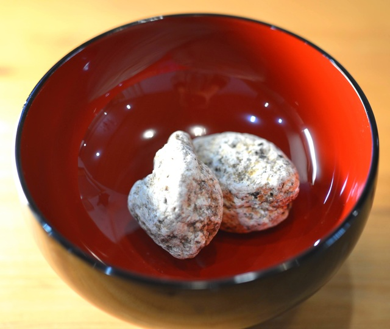
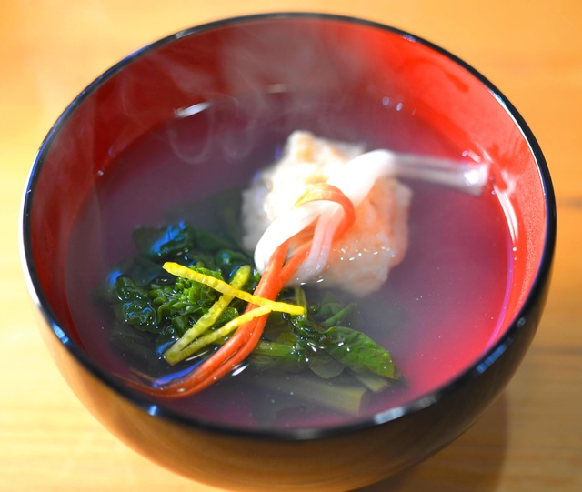
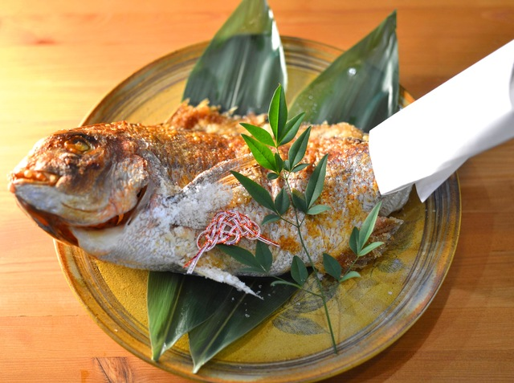
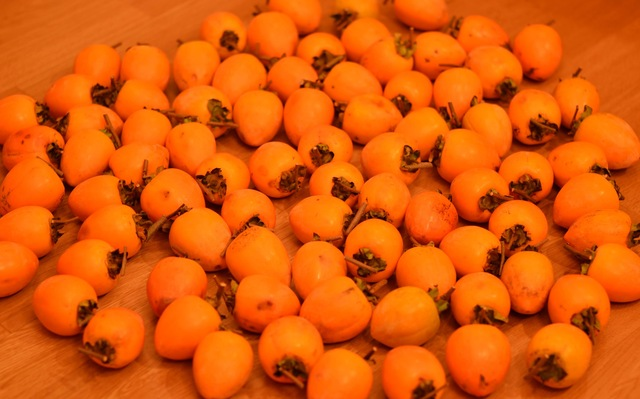
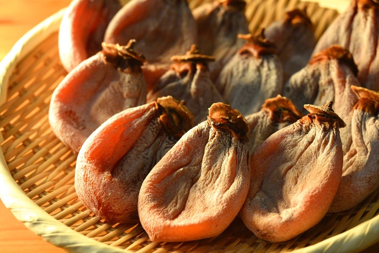
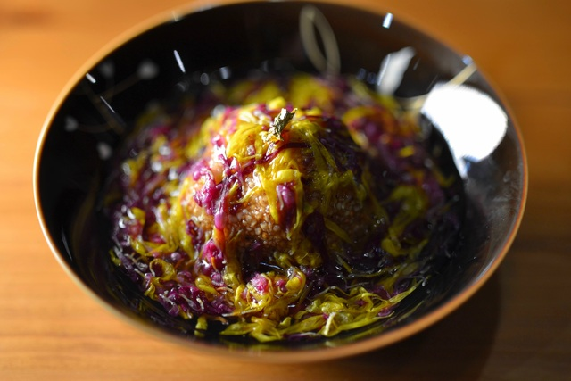
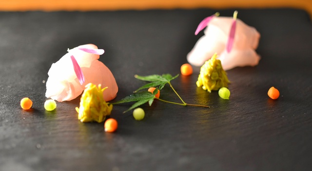
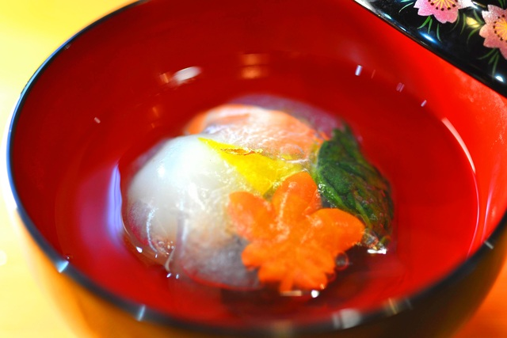
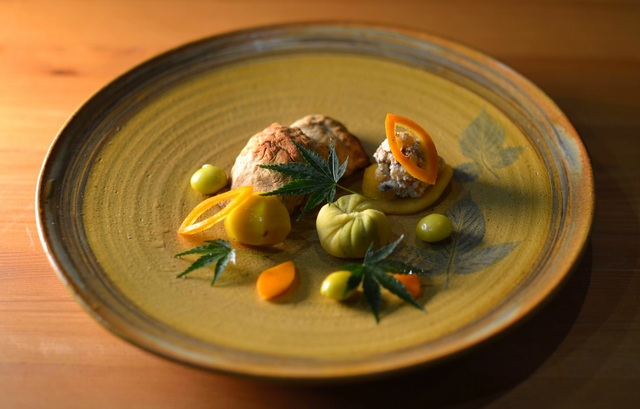
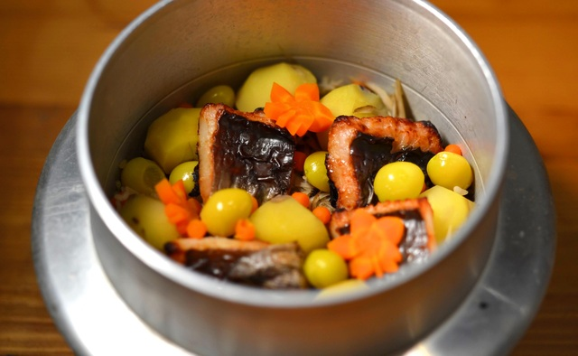
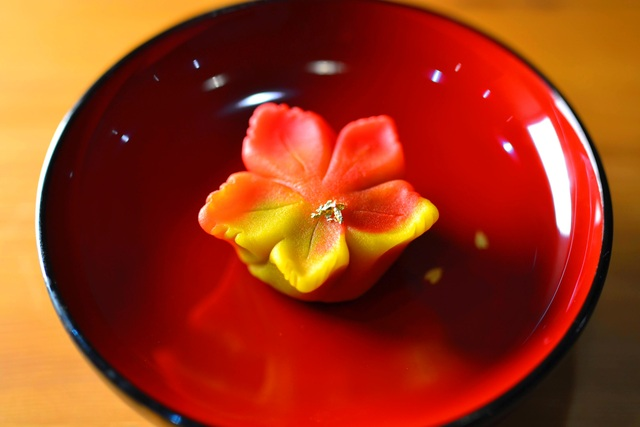
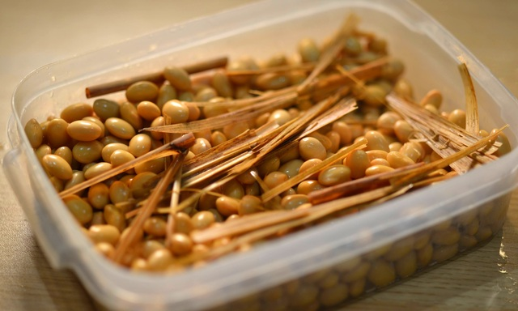